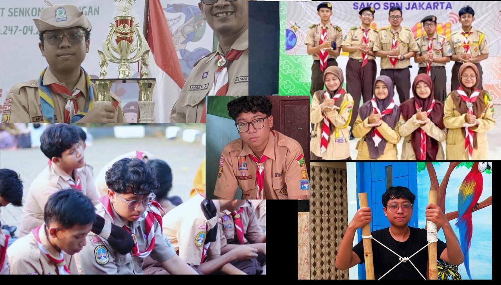
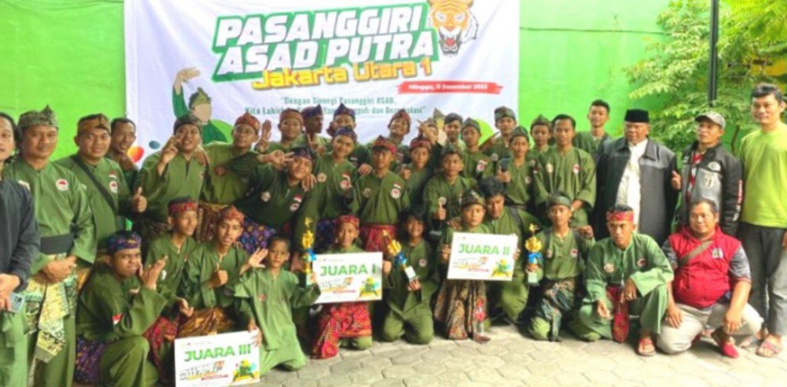
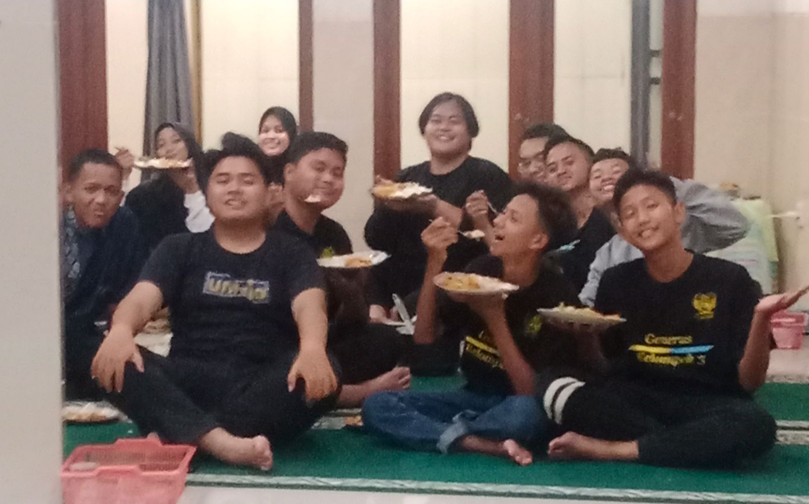
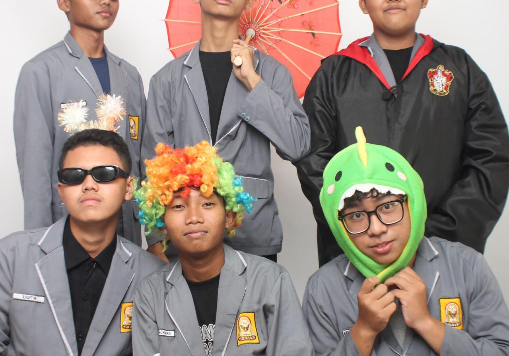
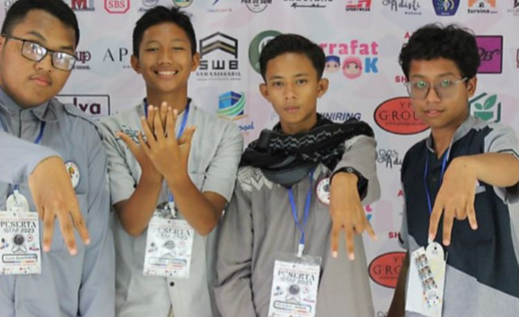

Milo Kayana
Aku
About
Perkenalkan Nama Saya Milo Kayana, saya adalah murid smk galajuara kelas x tkj 2 angkatan 14, saya sangat suka menonton anime dan mendengar lagu yang fresh

Milo Kayana
Hi, aku seseorang yang suka musik, dance, dan marching band. Buat aku, musik bukan cuma hiburan, tapi juga jadi mood booster dan teman di berbagai suasana. Aku suka dengerin lagu sambil menikmati vibe yang bikin lebih semangat dan happy. Selain itu, aku juga suka dance karena bisa jadi cara buat mengekspresikan diri dan menambah rasa percaya diri. Aku senang belajar gerakan baru dan menikmati setiap beat musik. Di sisi lain, marching band juga jadi salah satu hal yang aku suka karena ngajarin disiplin, kekompakan, dan kerja sama tim. Menurut aku, melakukan hal yang kita suka bikin hidup jadi lebih seru dan penuh warna.
- Birthday: 12 Januari 2010
- Instagram: Milokaiii
- City: Bekasi
- Age: 16
- Hobi Main
- Email: MiloKayana1404@gmail.com
Ekstrakurikuler

Marching Band
Marching Band ngajarin gw tentang disiplin, tanggung jawab, dan kerja sama tim. Setiap latihan sampai tampil di depan banyak orang jadi pengalaman yang seru sekaligus bikin mental lebih kuat. Walaupun capek, semua terasa worth it karena bisa berkembang dan bangga bareng satu tim.”

Dance
“Dance jadi salah satu cara gw buat mengekspresikan diri dan menikmati musik dengan bebas. Dari dance gw belajar percaya diri, konsisten latihan, dan berani tampil di depan orang banyak. Selain seru, dance juga bikin gw lebih kreatif dan penuh semangat.”

Pramuka (Galajuara)
"Pramuka mengajarkan kami arti disiplin, tanggung jawab, kerja sama, dan kemandirian. Di setiap kegiatan, kami belajar menjadi pribadi yang lebih kuat, peduli terhadap sesama, serta berani menghadapi tantangan. Pramuka bukan hanya tentang tali-temali atau perkemahan, tetapi juga tentang persahabatan, pengalaman, dan kenangan yang tak terlupakan. Dengan semangat Satyaku Kudarmakan, Darmaku Kubaktikan, kami terus belajar menjadi generasi yang aktif, kreatif, dan berkarakter."

Pramuka
Ikut Pramuka secara individu tuh bener-bener buka peluang baru buat gw. Salah satu yang paling seru jelas pas join “INTERNATIONAL JOTA-JOTI” kemarin! Sebagai anak Jakarta Utara, bangga banget sekarang bisa aktif sekaligus di 3 komunitas Pramuka buat terus upgrade diri dan nambah relasi.
Paskibra
Paskibra bener-bener jadi tempat gw nemuin arti kedisiplinan dan kerja keras yang sesungguhnya. Bangga banget, lewat proses latihan yang panjang, gw dan tim akhirnya bisa sukses meraih Juara 1 di lomba tingkat se-Jabodetabek!

Pancaksilat
"Selain melatih fisik, Pencak Silat juga membentuk mental dan karakter gw jadi lebih kuat. Pengalaman yang paling berkesan adalah pas dapet kesempatan buat tanding dan alhamdulillah bisa menang membawa nama baik Tarumajaya di arena!"

Pemuda Masjid
"Saya rajin ngaji dan beramalsholih di masjid ldii, itu membuat wawasan islam luas, kenapa saya rutin mengaji, karna ngaji di ldii ga kaku dan enjoy belajar agama serasa belajar bareng pa jul, dan dari kecil sudah di didik agar mempunyai akhlak yang baik"

Osis
"saat smp Join OSIS, bener-bener jadi wadah terbaik buat gw belajar leadership, problem solving, dan manajemen tim. Pengalaman paling berharga adalah pas dipercaya buat maju jadi Calon Ketua OSIS, yang bener-bener melatih mental gw buat berani memimpin dan berkontribusi nyata buat sekolah!"

Tahfidz Qur'an
"Ikutt tahfidz Qur'an, gw belajar banyak tentang konsistensi, fokus, dan ketenagan jiwa dalam menjaga kalam-Mu. Menghafal Al-Qur'an bukan sekadar kewajiban, tapi jadi pondasi terbaik buat ngebentuk akhlak dan fokus gw dalam ngejar mimpi-mimpi lainnya."
Testimonials
Awalnya aku kira ini cuma foto biasa, tapi ternyata vibes-nya dapet banget. Angle, lighting, sama ekspresinya natural jadi keliatan aesthetic tanpa keliatan dipaksain. Edit HD-nya juga bikin hasilnya jauh lebih clean dan detail. Serius, hasil akhirnya cocok banget buat dipasang di IG atau dijadiin wallpaper. Keren parah pokoknya

Anjil Mubarok
Yang paling aku suka dari hasil ini tuh warnanya soft tapi tetap tajam. Detail muka, outfit, sampai background jadi keliatan lebih hidup dan premium. Nuansanya juga calm dan classy banget, jadi fotonya punya feel yang beda dibanding foto biasa. Bener-bener bikin foto sederhana jadi keliatan mahal.

Arkan Hadziq.Y
Jujur ekspektasiku awalnya biasa aja, tapi pas lihat hasil akhirnya langsung kaget karena kualitasnya naik jauh. Foto jadi lebih terang, lebih HD, dan tetep natural tanpa bikin muka aneh. Vibes couple mirror selfie-nya juga dapet banget. Cocok buat story, feed, bahkan dijadiin kenang-kenangan.

Briliano Putra.A
Editannya rapih banget, nggak lebay tapi hasilnya langsung keliatan beda. Detail kecil kayak pencahayaan, pantulan kaca, sama tone warna dibuat balance jadi nyaman dilihat. Yang bikin keren tuh hasilnya masih keliatan realistis tapi punya sentuhan aesthetic modern. Overall clean banget

Novarel Merciano D.P
Editannya rapih banget, nggak lebay tapi hasilnya langsung keliatan beda. Detail kecil kayak pencahayaan, pantulan kaca, sama tone warna dibuat balance jadi nyaman dilihat. Yang bikin keren tuh hasilnya masih keliatan realistis tapi punya sentuhan aesthetic modern. Overall clean banget

Ali Muhammad.N
Contact
Address
Tarumajaya Kabupaten Bekasi,Jawa Barat
Call Us
+62 896-0267-5282
Email Us
MiloKayana1404@example.com